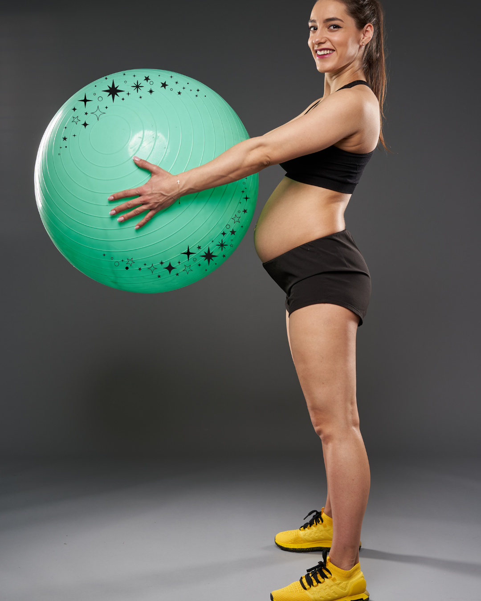

Clases de Parto en Puerto Rico
Preparación consciente, personalizada y basada en 30 años de experiencia con el Método de Psicoprofilaxis Obstétrica. Clases Particulares de modo privado a domicilio, tambien se ofrece de modo virtual.
¿Lista para prepararte con confianza?
Ofrezco clases de parto y talleres de mindfulness y conciencia corporal en modalidades presencial, privada a domicilio y virtual, adaptándome a tus necesidades para brindarte un acompañamiento verdaderamente personalizado. Clases privadas, presenciales en Puerto Rico y adaptadas a tu tipo de parto. Son 3 sesiones de 2:30 hrs c/u.
Agenda tus claseSin compromiso • Respuesta en menos de 24 horas
Clase #1
Reconociendo el inicio del parto
- Contracciones: mecanismo, propósito y cómo reconocerlas.
- Fases del parto: prodrómica vs. primera etapa activa.
- Técnicas prácticas: relajación, masajes y estiramientos con pelota.
Clase #2
Parto consciente y manejo del dolor
- Técnicas de confort para transitar el dolor con presencia.
- Respiración consciente adaptada a cada etapa.
- Biomecánica pélvica: mover el cuerpo para facilitar el descenso.
Clase #3
Empuje, nacimiento y primeros días
- Empuje espontáneo vs. dirigido y cuándo usar cada uno.
- Posiciones de empuje que amplían la salida pélvica.
- Lactancia y apego: agarre, posiciones, crisis de crecimiento.

Descripción de los Temas
- Técnicas efectivas de respiración y métodos de relajación para facilitar el trabajo de parto, promoviendo calma y mayor control del dolor.
- Uso de la bola de Pilates como herramienta para aliviar molestias, mejorar la movilidad pélvica y favorecer el descenso óptimo del bebé durante el parto.
- Estrategias para el manejo del miedo y la ansiedad a través del mindfulness, fortaleciendo la conexión mente-cuerpo y la preparación emocional.
- Preparación integral para el acompañante, incluyendo aspectos emocionales y prácticos para brindar un apoyo efectivo durante el proceso de parto.
- Información completa y clara sobre el proceso fisiológico del nacimiento, para empoderar a la mujer y su familia con conocimiento y seguridad.
¿Por qué elegir Psicoprofilaxis con Lula?
Con más de 30 años de experiencia, acompañando a cientos de familias en Puerto Rico, Psicoprofilaxis con Lula te ofrece una preparación integral que va más allá de enseñar técnicas. Nuestro enfoque te empodera para vivir tu parto con autonomía, calma y confianza en tu cuerpo, reduciendo significativamente la ansiedad y mejorando tu bienestar físico y emocional durante el proceso.
La psicoprofilaxis obstétrica ofrece técnicas fundamentales que te preparan física y emocionalmente para el parto, enfocándose en tres pilares: respiración controlada, técnicas de relajación y ejercicios físicos suaves. La respiración controlada mejora la oxigenación tanto para la madre como para el bebé, ayudando a manejar la ansiedad y el dolor. Las técnicas de relajación reducen tensiones y te permiten conservar energía y serenidad durante el trabajo de parto. Los ejercicios físicos aumentan la flexibilidad y fortalecen el cuerpo para facilitar el proceso. Además, incluye información clara y apoyo emocional para que enfrentes el parto con confianza y menos miedo, promoviendo un nacimiento más natural y positivo.
Estas técnicas son parte de un enfoque integral que involucra también a la pareja, favoreciendo un ambiente de acompañamiento y seguridad que contribuye a una mejor experiencia de parto.
Ofrecemos tres sesiones privadas, presenciales en San Juan, Caguas, Bayamón, Dorado y zonas cercanas, o virtuales para todo Puerto Rico, adaptándonos a tus necesidades.
Con métodos prácticos como respiración controlada, relajación y ejercicios suaves, te preparamos para un parto más natural, consciente y con mayor bienestar para ti y tu bebé.